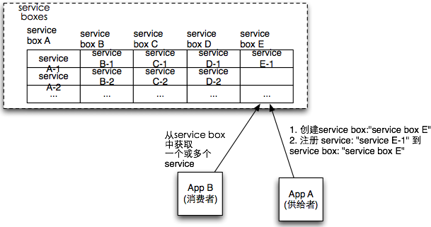

service机制是扩展机制, 通过'Service机制', 保证App之间可以扩展功能,界面,操作,和流程等, 而不必担心原有应用升级带来的问题。

service即服务, 在系统中service体现为service类.
由供给者提供可用的service
系统底层是通过两个步骤完成的
app/$app_id/services.xml
<services> ... <service id="file_storage" interface="base_interface_sotrager" optname="图片存储引擎"> <class orderby=80>base_storage_filesystem</class> </service> <service id="view_compile_helper"> <class>base_view_compiler</class> </service> ... </services>
消费有两种方式
通过service_box_id, 从service box中获取一个优先级最高的service class, 进行相关处理. 默认情况下, 后注册者优先级最高.
用法:
kernel::service($service_box_id);
例子: 通过service_box_id:site_index_seo获取提供页面seo的service class
<?php
class site_ctl_default extends site_controller{
...
$obj = kernel::service('site_index_seo');
if(is_object($obj) && method_exists($obj, 'title')){
$title = $obj->title();
}
...
}
通过service_box_id, 从相应service box中获取所有service class 进行相关处理. 默认情况下, 后注册者优先级最高.
用法:
kernel::servicelist($service_box_id);
例子: 通过service_box_id:view_helper获取所有关于系统smarty的插件, 并注册在系统中
<?php
class base_component_compiler{
...
function __construct(&$controller){
...
foreach(kernel::servicelist('view_helper') as $helper_path=>$helper){
foreach(get_class_methods($helper) as $method){
$this->set_view_helper($method,$helper_path);
}
}
...
}
}
...
bryant@forsky /Users/bryant/codes/ecos %> app/base/cmd dev:show services file_storage base_storage_filesystem view_compile_helper base_view_compiler view_helper base_view_helper ...
请用app_id加下划线做为前缀: "{$app_id}_"
1、页面出不来效果，并且cmd update无法找到service
2、cmd update出现安装成功service提示，但是页面无法出现效果。
3、页面报错“Don't find *'**'”。
4、页面报错“HTTP_ERROR_***:500”。